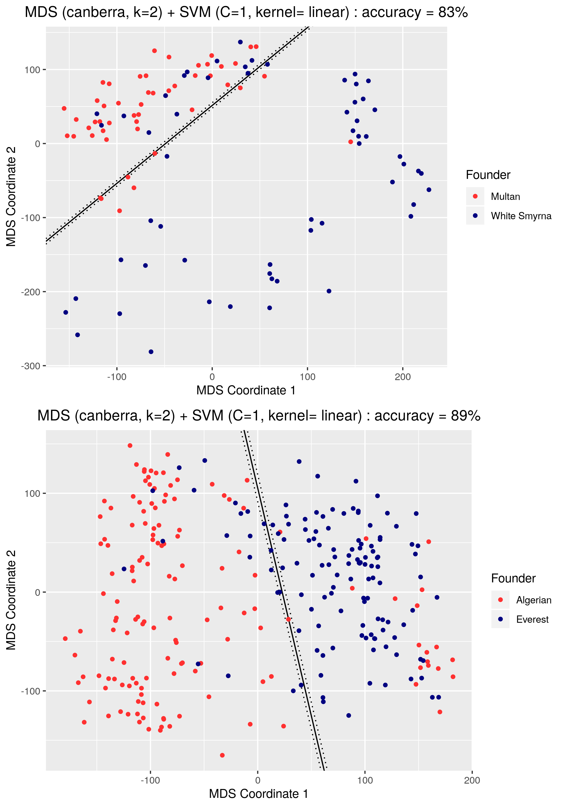
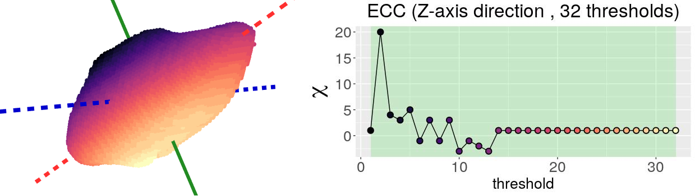
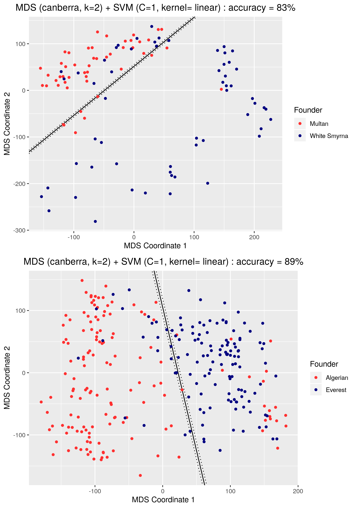
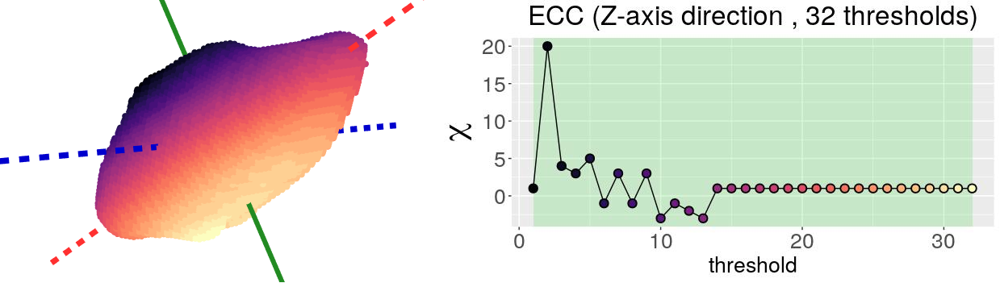
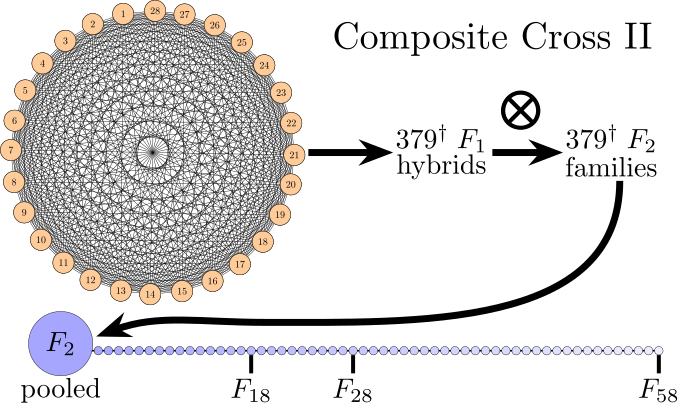
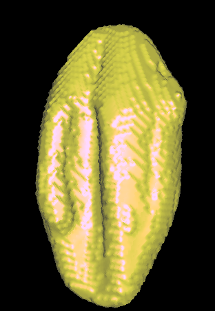
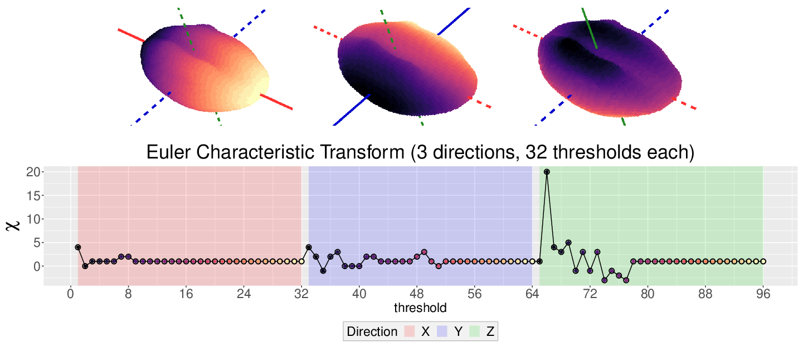

Using topology to analyze the shape of barley
 



10.1093/insilicoplants/diab033


1 Computational Math, Science & Engineering, Michigan State University
2 Horticulture, Michigan State University
3 Mathematics and Computer Science, TU Eindhoven
4 Integrative Plant Science, Cornell University
5 Botany and Plant Sciences, University of California, Riverside



| Shape descriptors | # descr | F1 Score |
|---|---|---|
| Traditional | 11 | 0.55 ± 0.019 |
| Topological (ECT + UMAP) | 12 | 0.74 ± 0.016 |
| Combined (Trad + Topo) | 23 | 0.86 ± 0.010 |
Acknowledgements: This work is supported in part by Michigan State University and the National Science Foundation Research Traineeship Program (DGE-1828149).
\[\chi = \#(\text{Vertices}) - \#(\text{Edges}) + \#(\text{Faces})\]


[1] EJA, M. Quigley, T. Ophelders, J. Landis, D. Koenig, E. Munch, D. Chitwood (2022) "Measuring hidden phenotype: quantifying the shape of barley seeds using the Euler characteristic transform," in silico Plants, 4(1) diab033
[2] K. Turner, S. Mukherjee, D. M. Boyer (2014) "Persistent homology transform for modeling shapes and surfaces," Information and Inference, 3(4) 310–344.